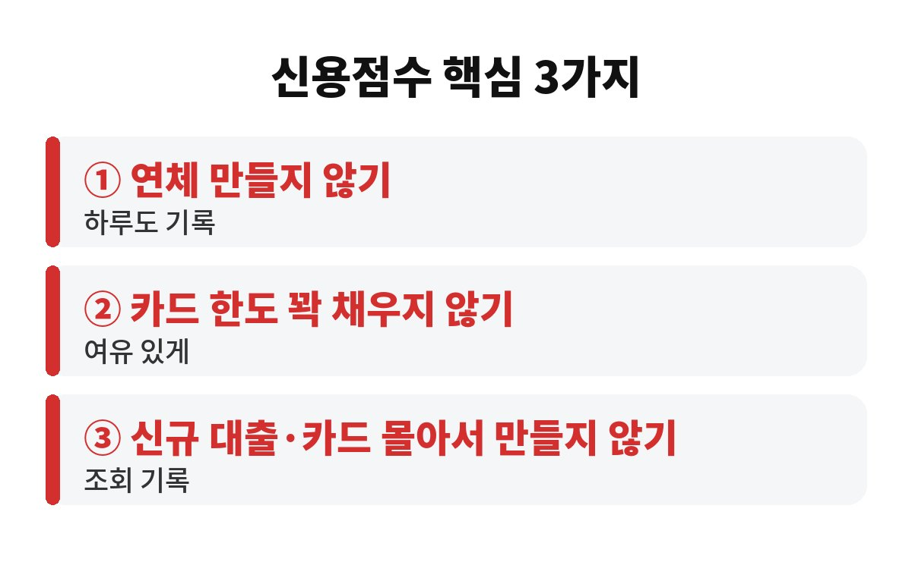
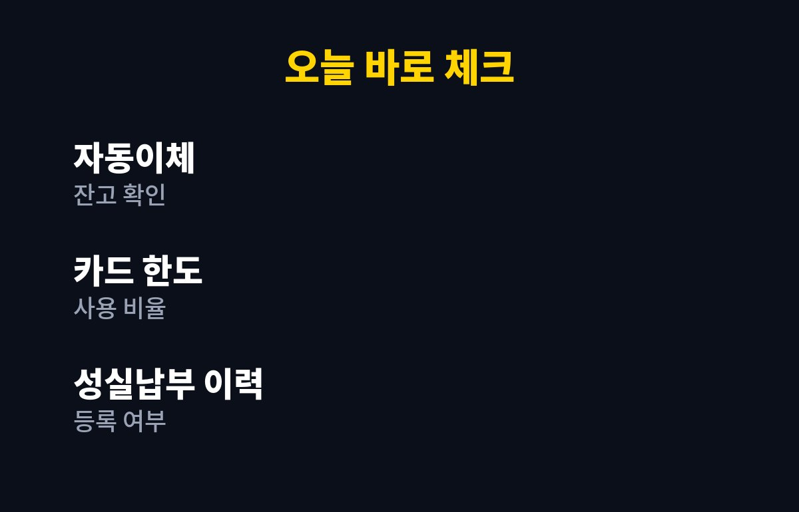

신용점수 올리는 법의 핵심은 딱 3가지예요. 연체를 만들지 않고, 카드 한도를 꽉 채우지 않고, 신규 대출과 카드를 몰아서 만들지 않는 거죠. 대출이 있거나 곧 받을 계획이라면, 내 점수가 왜 오르지 않는지 궁금하시죠?
신용점수는 한 번 깎이면 회복에 시간이 걸리는 대신, 습관만 바꿔도 천천히 올라가는 점수예요. 오늘은 신용점수 올리는 법을 가장 효과가 큰 순서대로 풀어볼게요.
가장 먼저 챙길 건 연체예요. 대출 이자, 카드 대금, 통신비 같은 걸 약속한 날짜에 못 내면 연체 기록이 남을 수 있고, 연체 기간이 길어질수록 점수에는 더 크게 불리해집니다. 하루짜리 연체라도 마음 놓고 있으면 안 되는 이유예요.
그런데 의외로 많은 분이 "잔고가 모자란 줄 몰랐다"가 아니라 "자동이체 날짜를 헷갈렸다"로 연체를 만들어요. 월급날과 이체일이 하루만 어긋나도 생기는 일이거든요. 그래서 이체일을 월급날 다음 날 이후로 맞춰 두는 것만으로도 큰 사고를 막을 수 있습니다.
두 번째는 한도 사용 습관이에요. 카드값은 늘 제때 갚는데도 한도 대부분을 쓰고 있다면, 금융사 입장에서는 "여유가 없는 사람"으로 보일 수 있어요. 특히 카드론이나 현금서비스는 급전으로 비칠 수 있어서 자주 쓰면 불리하게 작용하는 경우가 많습니다.
그래서 신용점수를 올리는 법 중 하나는 소비 자체를 줄이는 게 아니라, 한도의 일부만 쓰고 나머지는 남겨 두는 거예요. 큰 지출이 필요할 땐 카드를 나누어 쓰거나 체크카드와 섞어 쓰면 부담이 덜합니다.
세 번째는 신규 거래예요. 짧은 기간에 대출 상담을 여러 곳에서 받거나 카드를 연달아 만들면, 급하게 돈이 필요한 사람처럼 보일 수 있어요. 금리를 비교하는 건 좋은 습관이지만, 실제로 신청이 쌓이면 기록이 남는다는 점은 알아 두세요.
대출을 알아볼 땐 먼저 앱에서 한도와 금리를 조회해 보는 방식으로 비교하고, 진짜 쓸 곳 한두 군데만 실제 신청하는 게 안전합니다. 금융사별로 반영 방식이 다르니, 신청 전에 "조회만 해도 기록이 남는지" 꼭 물어보세요.
정리하면 오늘 할 일은 세 가지예요. 자동이체 날짜와 통장 잔고를 확인하고, 카드 한도 사용 비율을 점검하고, 당분간 신규 대출과 카드 발급은 미루는 겁니다. 여기에 통신비나 공과금을 성실히 내 왔다면, 그 납부 이력을 신용평가에 반영하도록 등록하는 제도가 있는지 이용 중인 신용평가 앱에서 확인해 보세요. 사회초년생이나 금융 이력이 적은 분께 특히 도움이 될 수 있어요.
습관을 바꿨다고 다음 날 점수가 확 오르지는 않아요. 연체 기록은 정해진 기간 동안 남고, 새로 쌓이는 성실한 이력이 천천히 비중을 키우는 구조거든요. 그래서 신용점수 올리는 법은 단거리 달리기가 아니라 꾸준히 걷는 쪽에 가깝습니다. 조급하게 대출 갈아타기를 반복하거나 점수를 높여 준다는 유료 서비스에 돈을 쓰기보다, 이미 가진 거래를 깔끔하게 유지하는 게 훨씬 확실해요.
또 하나, 사용하지 않는 카드와 오래된 거래를 무작정 정리하는 것도 신중해야 합니다. 거래 기간이 길수록 유리하게 보는 경우가 있어서, 해지 전에 이용 중인 금융사에 영향이 있는지 한 번 물어보시길 권해요. 점수는 앱에서 무료로 조회할 수 있고 조회만으로는 점수가 떨어지지 않는 서비스가 많으니, 한 달에 한 번 흐름만 확인해 보세요. 변화가 보이기 시작하면 동기부여도 훨씬 커집니다.
| 핵심 1 | 연체를 만들지 않는다, 자동이체일 점검 |
| 핵심 2 | 카드 한도는 일부만 쓰고 여유를 남긴다 |
| 핵심 3 | 신규 대출·카드는 몰아서 만들지 않는다 |


점수는 하루아침에 뛰지 않지만, 위 습관을 몇 달만 지켜도 흐름이 달라지는 경우가 많아요. 혹시 내 점수가 이상하게 안 오르고 있다면, 위 세 가지 중 어디에 걸리는지 지금 한번 떠올려 보세요. 어떤 항목이 가장 마음에 걸리셨나요? 댓글로 알려 주세요. 도움이 됐다면 구독도 눌러 주세요!
※ 본 글은 일반적인 정보 제공이며 투자·금융 상품 권유가 아닙니다. 신용평가 방식은 기관마다 다르니 정확한 내용은 각 금융사·신용평가사에서 확인하세요.